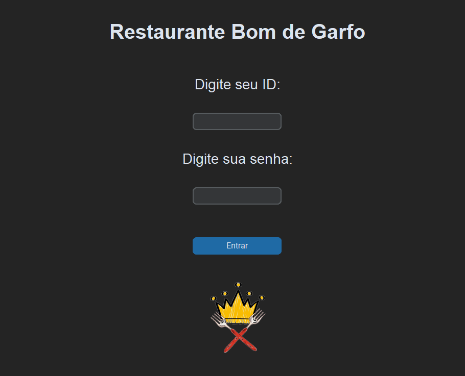
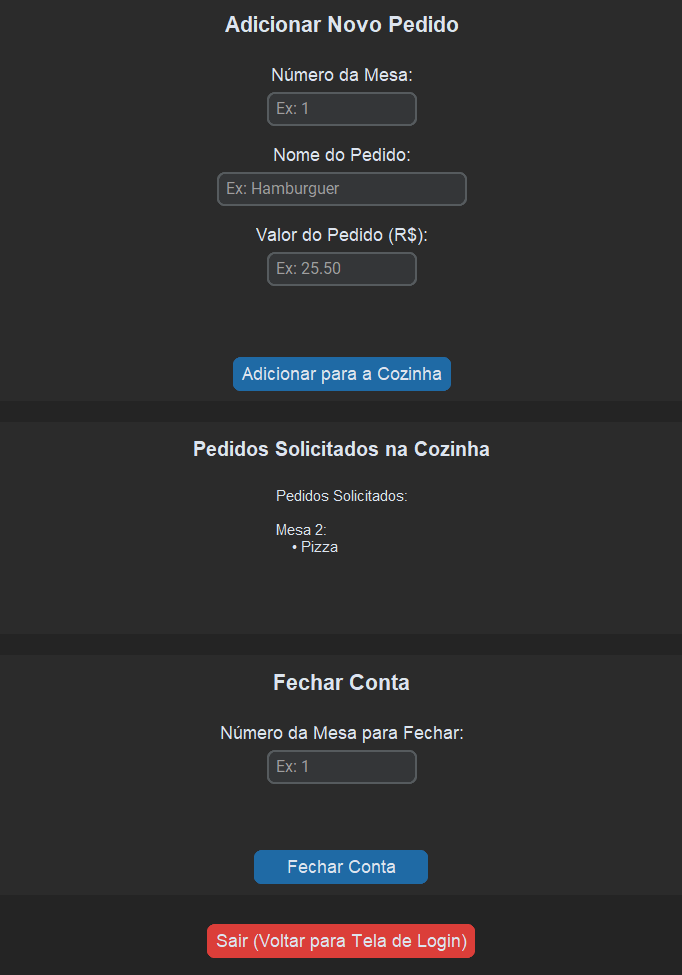
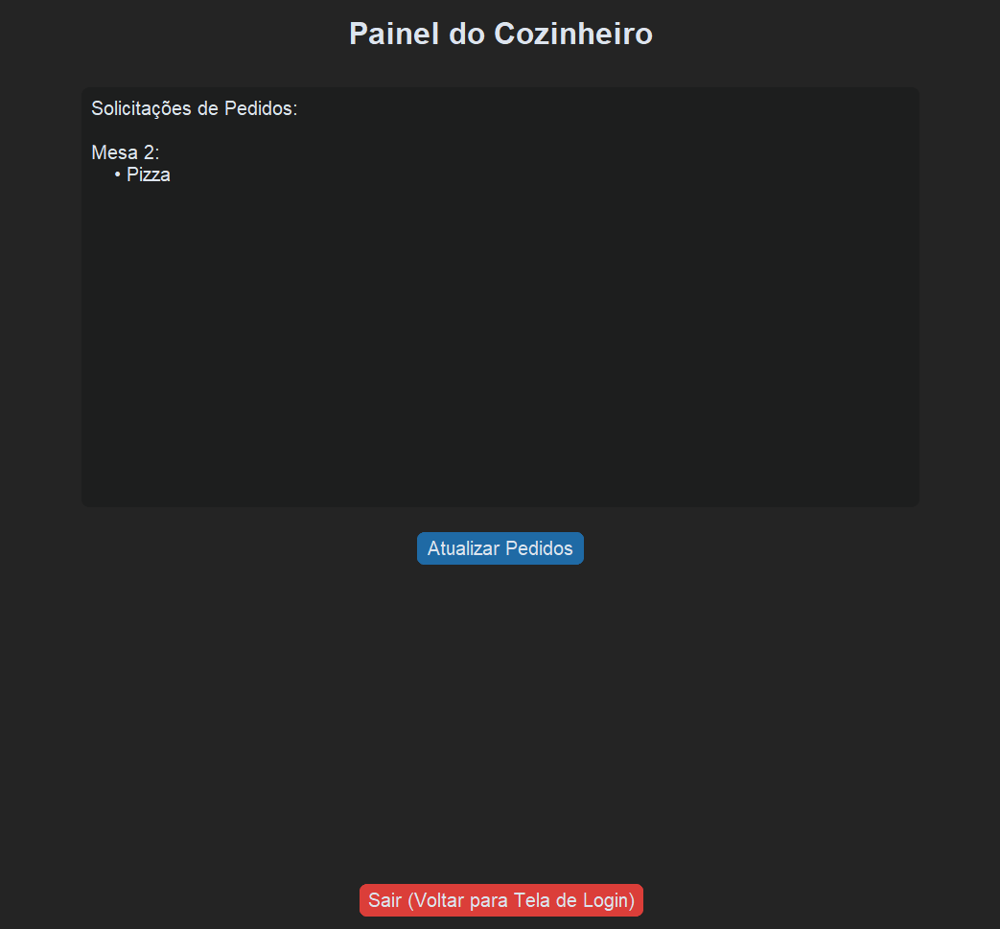

Oi, tudo bem? Aqui você vai descobrir várias informações e curiosidades sobre mim.
Como estudante de Sistemas de Informação, me interesso pelo desenvolvimento de ferramentas que auxiliem o dia a dia de outras pessoas e possam tornar o mundo um lugar melhor. Ademais, também tenho grande curiosidade nas áreas de banco de dados e ciência de dados.
O seguinte projeto faz a implementação de um sistema de gerenciamento de um restaurante fictício utilizando conceitos de Programação Orientada a Objetos (POO) em Python.


